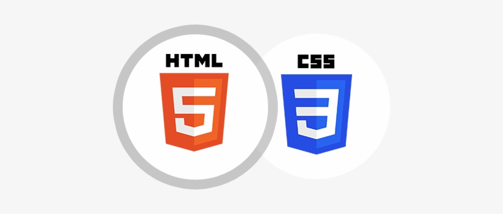
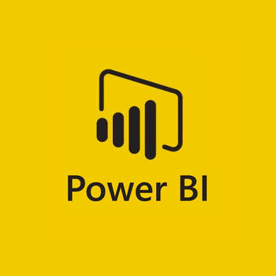
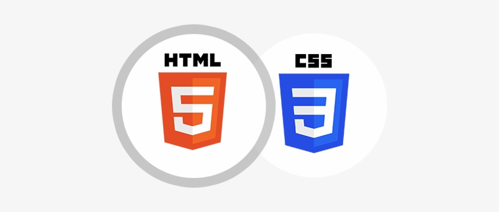
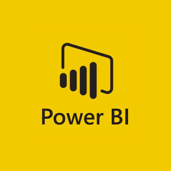
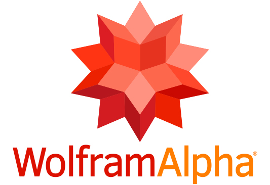
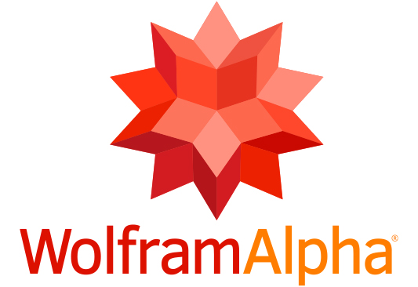

Servicios Profesionales
- Desarrollo de productos y servicios
- Creación de marca y comunidad
- Recolección y análisis de datos
- Creación de páginas web
- Consultoría estratégica para emprendimientos
- Talleres para incrementar productividad
Herramientas de trabajo
Experiencias de Trabajo
Felipe es una persona que siempre está
activa en la búsqueda de nuevos proyectos para su
desarrollo personal.Es organizado y trabaja con notable eficiencia.
Tiene grandes objetivos por los cuales trabaja día a día.
-Rodrigo Rivera, Estudiante ESEN
 




 
